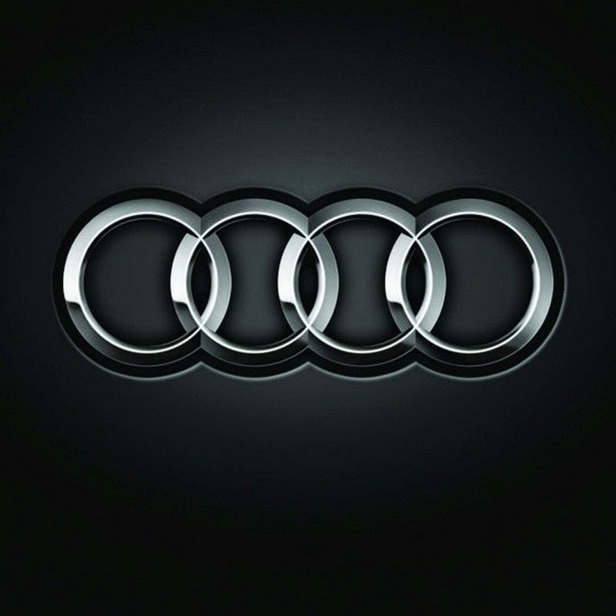

AUDI
Volkswagen Aktiengesellschaft
Audi AG — немецкая автомобилестроительная компания в составе концерна Volkswagen Group, специализирующаяся на выпуске автомобилей под маркой Audi. Штаб-квартира расположена в городе Ингольштадт (Германия). Девиз — Vorsprung durch Technik (с нем. — «Прогресс через технологии»). Объём производства в 2016 году составил около 1 903 259 автомобилей.
Audi в нынешнем виде является наследником концерна Auto Union, образованного в результате объединения четырёх компаний, выпускавших автомобили и мотоциклы под марками DKW, Horch, Audi и Wanderer. Вследствие преобразований была оставлена лишь торговая марка Audi. Первый автомобиль марки Wanderer появился в 1913 г., первое собственное предприятие (Horch & Co.) Август Хорьх организовал в 1899 году, а после того, как кредиторы отстранили его от дел, в 1909 году была организована компания Audi Automobil-Werke, что переводится как «Автомобильный завод Ауди». А в 1910 г. был выпущен первый автомобиль. В переводе с немецкого Хорьх означает «слушай». Когда выбирали название для новой марки, сын одного из деловых партнёров Августа предложил перевести фамилию основателя на латынь, то есть Audi — (в переводе с лат. — «слушать»). В 1921 году фирма совершила своеобразный прорыв. В этом году был выпущен первый немецкий автомобиль с левосторонним расположением рулевого управления. До этого фирма занималась лишь двигателями и подвесками, теперь же она стала обращать внимание и на удобство управления. В 1928 году эта марка была выкуплена мотопроизводителем DKW, и в 1931 году состоялся дебют автомобиля с передним приводом, DKW F1. Содействовал этому мировой экономический кризис, начавшийся в 1929 году. Дело в том, что автомобили с большим объёмом двигателя перестали пользоваться спросом ввиду всеобщего безденежья. И тогда глава Audi поручил разработать компактный автомобиль с передним приводом.
Нарастание и начало Второй мировой войны способствовали разработке и производству специальных транспортных средств для военных целей в 1930-х годах. Auto Union стал важным поставщиком транспортных средств для вооруженных сил Германии. После начала войны гражданское производство было прервано в мае 1940 года. После этого компания производила исключительно для военных целей.
Для производства авиационных двигателей Junkers по лицензии компания Auto Union в 1935 году основала дочернее предприятие "Mitteldeutsche Motorenwerke" (Центральный немецкий моторный завод) в Таухе, к северо-востоку от Лейпцига.
Во время Второй мировой войны Auto Union / Horch поставил шасси для броневика Sd.Kfz.222. Приведённый в действие двигателем Horch V8 мощностью 90 л. с. (66 кВт; 89 л. с.), он достиг максимальной скорости 50 миль/ч (80 км/ч) на дороге. Полноприводный Kfz. 11, или Horch / Wanderer Type 901, использовался в качестве среднего транспортного средства для перевозки немецких военных чиновников. Horch Works также произвела тяжелый транспортный автомобиль Einheits-PKW der Wehrmacht.
С начала 1944 года заводы Auto Union (заводы Horch и Audi в Цвиккау, Mitteldeutsche Motorenwerke и Siegmar / Wanderer в Зигмар-Шенау) подверглись сильным бомбардировкам и серьезным повреждениям. Армия США заняла Цвиккау 17 апреля 1945 года в конце Второй мировой войны. После вывода армии США 30 июня из Цвиккау все саксонские заводы "Auto Union" были освобождены Красной Армией.
Всем известно, что главными конкурентами Audi на автомобильном рынке являются компании Mercedes-Benz и BMW, так называемая «Немецкая Тройка». Многие думают, что рекламная война началась с плаката BMW в 2006 году, где компания BMW «мило» поздравляли Audi с победой в конкурсе «Машина года»-2006 в Южной Африке. Но нет, все началось ещё в далеких 80-х годах, когда компания Audi выпустили рекламный ролик, где Audi 200 накручивает восьмерки вокруг Mercedes-Benz E-Klasse (W124) и BMW 5-серии (E28). Буквально через год компания BMW выпустила ответный ролик, продемонстрировав свою новую модель BMW 5-серии (E34). В рекламном ролике BMW присутствует три автомобиля, все автомобили накрыты тремя полотнами. Первый автомобиль оказался BMW 5-серии, а остальные два автомобиля резко растворились и полотна, которыми они были накрыты упали на землю, это был намек компаниям Audi и Mercedes-Benz. Компания Mercedes-Benz решила проигнорировать рекламы Audi и BMW, не отвечая им по сей день ничего. Рекламная война Audi и BMW продолжается до сих пор. Не так давно в рекламную войну вступил Lexus.